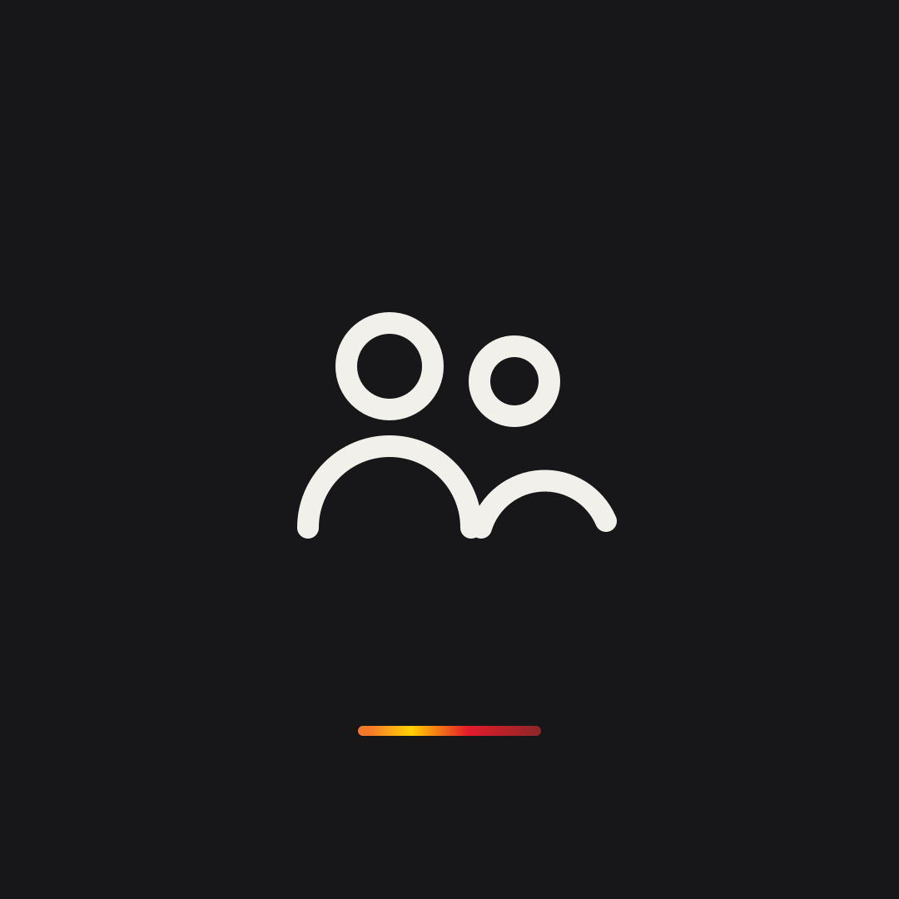
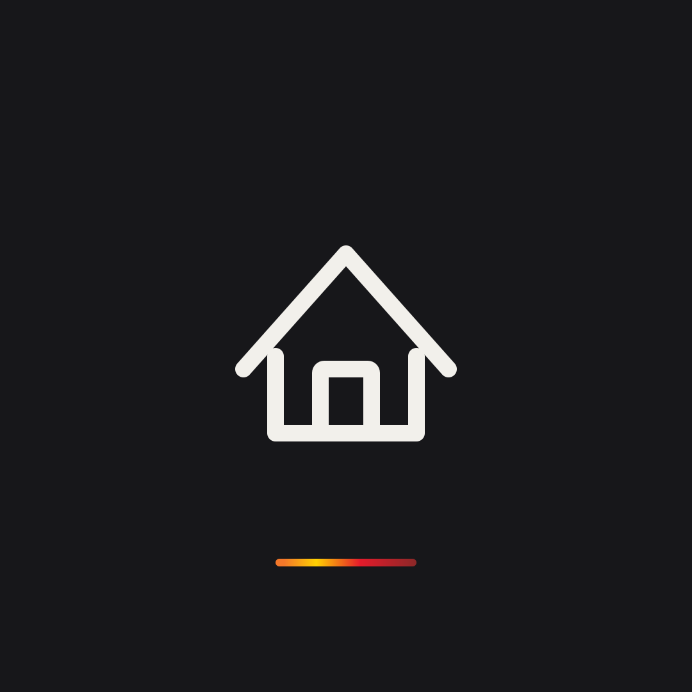

Qué pasó en
4 meses y qué
hacemos hasta
fin de año
Análisis de las 16 piezas publicadas entre el 1 de agosto y el 23 de noviembre de 2026 con datos reales de Metricool, y el plan de contenidos, automatización e identidad para cerrar diciembre.
Las tres frases que resumen todo
1. El contenido sí se ve y sí se comparte, pero casi no convierte. 63.778 vistas produjeron 17 seguidores netos y 50 comentarios. La atención llega; el paso siguiente no ocurre.
2. Octubre fue el mejor mes y noviembre el peor, y la diferencia es volumen. Octubre tuvo 6 piezas y 705 vistas diarias. Noviembre lleva 2 piezas y 234 vistas diarias: −67 %, y seguidores en negativo.
3. El taller de pretemporada fue, de lejos, lo mejor del período. Ese arco completo —anuncio, cupos agotados, casa llena, resumen— generó las 5 mejores piezas. Diciembre debe repetir exactamente esa jugada.
Dónde se tapa el embudo
Leemos la cuenta como el recorrido de alguien que todavía no conoce Recovery. Cada filtro deja pasar a menos gente. Se leen en orden y se actúa sobre el primero que está tapado.
Alcance · ¿te vieron?
Mediana de 764 personas alcanzadas por pieza sobre 3.689 seguidores. No es explosivo, pero el contenido circula: 21.766 personas únicas en el período.
Retención · ¿se quedaron?
Mediana de 18,7 % y 8,9 segundos vistos. Correcto para la categoría, con una excepción clara: todo lo que pasa de 60 segundos se desploma.
Valor · ¿les sirvió?
13,2 guardados + compartidos por cada 1.000 vistas, y 260 compartidos en total. Este es el punto más fuerte de la cuenta: la gente reenvía el contenido de Recovery a alguien que lo necesita.
Conversión · ¿se quedaron contigo?
137 seguidores ganados y 121 perdidos en 4 meses. Neto: +17. Por cada 1.000 vistas la cuenta gana 0,27 seguidores. La gente ve, comparte y se va.
Intención · ¿te buscaron?
50 comentarios en 21.516 vistas de contenido. El reel del tendón del 12 de noviembre —el que estrenaba la guía nueva— recibió 0 comentarios, y la guía solo se entrega por comentario. Ese día el embudo recibió cero personas.
Diagnóstico
Los filtros 1, 2 y 3 funcionan. El problema no es el contenido: es el pedido. Recovery produce material que la gente consume y reenvía, pero la única puerta de entrada al negocio —comentar una palabra— se usa 2,3 veces por cada 1.000 vistas. Todo el plan de diciembre se construye sobre arreglar los filtros 4 y 5, no sobre producir más.
Qué funcionó mejor
Las 16 piezas ordenadas por vistas. La mediana de la cuenta es 1.239 vistas: todo lo que está por encima de esa línea funcionó.
Vistas por pieza
1 ago – 23 nov 2026 · mediana de la cuenta 1.239
Formato ganador · repetir
El evento real documentado: anuncio → cupos agotados → casa llena → resumen con testimonios.
- Las 5 piezas del arco promediaron 1.830 vistas contra 1.239 de la mediana.
- «Casa llena» fue la mejor pieza del período: 3.260 vistas, 58 likes, 31 compartidos y los únicos seguidores atribuidos a una pieza.
- Octubre, el mes construido sobre ese evento, fue el mejor: 21.856 vistas y +12 seguidores.
Ángulo que más circula
Detrás de escena y prueba / resultado. Medianas de 1.692 y 1.539 vistas, muy por encima de la cuenta.
- Mostrar lo que pasa adentro supera a explicar lo que se ofrece.
- La vacante de fisioterapeuta —puro contenido humano, sin venta— hizo 1.925 vistas, más que cualquier pieza comercial del período.
Ángulo que mejor vende
Dolor concreto. No es el de más vistas, pero es el único que hace escribir a la gente.
- Mediana de 5 comentarios por pieza, contra 3 de los reels y 0,5 de los carruseles.
- Valor por 1.000 vistas: 18,8, muy por encima de la mediana de 13,2.
- Funciona cuando nombra la escena, no el diagnóstico: «presión al sentarte», «volvió el dolor de espalda», «duele al subir escaleras».
Vistas por día, mes a mes
La caída de noviembre es volumen de publicación, no alcance
Qué funcionó peor
Cuatro problemas concretos, todos corregibles sin producir más contenido.
1 · Noviembre se apagó
- 2 piezas en 23 días contra 6 en octubre.
- 234 vistas diarias contra 705: −67 %.
- Primer mes del período con seguidores netos negativos (−4).
- Sin carruseles: el último fue el 22 de octubre.
2 · Los reels largos se caen
- El reel del tendón dura 80 segundos y retuvo 11,6 %: la peor retención del período.
- Los dos mejores retienen 21,5 % y 22,2 % y duran 26 y 39 segundos.
- La frontera está cerca de los 60 segundos. Por encima, se pierde a la mitad de la gente.
3 · Vender reduce el alcance
- Piezas de venta: mediana de 409 personas alcanzadas.
- Piezas de valor o comunidad: 843. El doble.
- Y la mitad del calendario (6 de 16) fue de venta directa.
- El carrusel de incontinencia y el de Cámara Americana —ambos de venta— alcanzaron 315 y 245 personas con 0 comentarios cada uno.
4 · Las historias están muertas
- 48 historias entre el 4 de octubre y el 21 de noviembre.
- Alcance mediano: 108 personas, el 2,9 % de los seguidores.
- 5 respuestas en 48 historias. Es el canal donde nacen las conversaciones por mensaje directo y hoy no produce ninguna.
- En noviembre el alcance mediano cayó a 80 (2,2 %).
Retención según duración del reel
10 reels · cada punto es una pieza
| Fecha | Pieza | Tipo | Vistas | Alcance | Likes | Coment. | Guard. | Comp. | Reten. |
|---|
Quién está del otro lado
La audiencia de Recovery es local, adulta y está equilibrada entre hombres y mujeres. Eso define qué se puede comunicar y qué no tiene sentido empujar.
Edad y género de los seguidores
3.666 seguidores con dato
De dónde vienen
- Ecuador 86,3 %. Estados Unidos 3,2 %, Venezuela 2,2 %, España 1,7 %, Colombia 1,3 %.
- Cuenca 47,6 %. Sumando Ricaurte, Turi, Valle, Gualaceo, Llacao, San Joaquín, Sayausí, Sinincay, Tarqui y Paccha, el Azuay ampliado pasa del 52 %.
- Guayaquil 7,4 % y Quito 5,0 %: juntos, uno de cada ocho seguidores. No pueden ir a la clínica.
- Azogues 1,5 % · Loja 1,2 % · Riobamba 0,8 % · Ibarra 0,7 % · Ambato 0,7 %.
Qué significa para el plan
- La mitad de la audiencia puede ir a la clínica. Para ellos: taller presencial, valoración, programas.
- La otra mitad nunca va a ir. Hoy no tienen nada que comprar ni consumir. Ahí está la oportunidad de las guías, el taller virtual y los productos digitales de la sección 10.
- El público de 25 a 44 años trabaja sentado, entrena por su cuenta y tiene hijos pequeños: dolor de cuello y espalda, retorno al deporte y suelo pélvico posparto son los tres territorios con más gente.
La fuga: siete palabras en cuatro meses
Este es el hallazgo más caro del informe y el más fácil de arreglar.
Cada pieza enseñó una palabra distinta
PRETEMPORADA · DEPORTE · RUTINA · EJERCICIO · BIENESTAR · CUELLO · TENDÓN. Siete palabras clave distintas en dieciséis piezas. La audiencia nunca aprende el mecanismo: cada publicación empieza desde cero, y el que comentó una vez no sabe que puede volver a hacerlo.
El costo concreto: el 11 de noviembre se publicó la guía del tendón —una pieza excelente, con videos, ritmo y temporizador—. El 12 de noviembre salió el reel que la entregaba. Ese reel recibió 0 comentarios. La guía recibió 0 solicitudes por ese canal.
Por qué falla pedir comentarios
- Comentar es la acción más cara que existe en Instagram: es pública, queda asociada a un padecimiento y muchos no quieren que su círculo vea que preguntaron por incontinencia o dolor crónico.
- En salud, ese pudor es el doble de fuerte. Los dos carruseles clínicos más sensibles del período —incontinencia y dolor de oficina— tuvieron 0 comentarios los dos.
- Hoy el 99,8 % de la atención que recibe Recovery no tiene ninguna otra puerta por donde entrar.
Qué hacemos en su lugar
- Una sola palabra permanente para siempre: GUÍA. Deja de cambiar. Se repite en todas las piezas, en la bio y en las destacadas hasta que la audiencia la aprenda.
- Tres puertas, no una: comentario, mensaje directo y enlace en la biografía. La guía se consigue por donde cada persona se sienta cómoda.
- Sticker de historias en cada publicación: es la puerta privada, y hoy las historias no se usan para nada.
- Primer comentario fijado con la instrucción, para quien llega tarde al video.
Identidad: el logo y la foto de perfil
La cuenta usa todavía el logo del evento de los 10 años. Eso fecha el perfil: comunica «esto pasó», no «esto es». Propuesta: volver al isotipo oficial de la marca, el mismo del sitio web y de los uniformes.
 Opción A · recomendadaFondo blanco. Coincide con la web y con el fondo de las fotos del equipo.
Opción A · recomendadaFondo blanco. Coincide con la web y con el fondo de las fotos del equipo. Opción BFondo tinta. Más contraste en el feed, menos coherencia con el uniforme.
Opción BFondo tinta. Más contraste en el feed, menos coherencia con el uniforme.Por qué cambiarlo
- El logo de aniversario caduca: en 2027 seguirá diciendo 10 años.
- No coincide con la web, los uniformes ni las guías. Quien llega desde Google ve dos marcas distintas.
- A 110 píxeles, el texto del aniversario se vuelve ilegible y el isotipo pierde espacio.
Reglas de uso
- Margen: el isotipo ocupa el 74 % del lienzo. Más grande se recorta en el círculo; más pequeño desaparece en el feed.
- Nunca sobre foto, degradado inventado ni versión plana de un solo color: el degradado naranja → amarillo → rojo → vino es la marca.
- Mismo archivo en Instagram, Facebook, Google Business, WhatsApp Business y firma de correo. Hoy no coinciden.
Historias destacadas
Hoy el perfil no dice qué servicios existen, qué tecnología hay, cómo es el espacio ni quién atiende. Son ocho destacadas en este orden exacto: el perfil se lee de izquierda a derecha y las tres primeras son las que más se tocan.
 ServiciosTodo lo que trata Recovery, uno por historia
ServiciosTodo lo que trata Recovery, uno por historia CasosAntes y después, testimonios reales
CasosAntes y después, testimonios reales
EquipoQuién te atiende y de qué es especialista
El espacioRecorrido por la clínica, sala por sala TecnologíaEcografía, tecar, ondas de choque, láser, EPI
TecnologíaEcografía, tecar, ondas de choque, láser, EPI TalleresLos que hubo y el próximo
TalleresLos que hubo y el próximoCriterios de las portadas
- Sin texto dentro del círculo. A 60 píxeles no se lee; el nombre ya aparece debajo. El ícono hace todo el trabajo.
- Fondo tinta uniforme para que las ocho se lean como un bloque y el perfil se vea ordenado de un golpe.
- Barra de degradado de marca al pie de cada una: es el único elemento que las conecta con el logo.
- Los archivos están listos en 1080 × 1080 SVG dentro de esta misma carpeta.
Lo que falta para llenarlas
Cinco de las ocho destacadas se llenan con la producción pendiente: el equipo con el uniforme nuevo recorriendo los espacios y mostrando cada servicio.
- Esa grabación es el insumo de Servicios, Equipo, El espacio, Tecnología y Talleres a la vez.
- Es la pieza de producción con mayor retorno del trimestre: se graba una vez y alimenta el perfil de forma permanente.
- Recomendación: grabarla en la primera semana de diciembre, antes del taller, para poder usar el material en la promoción.
Plan: 23 de noviembre → 31 de diciembre
Con los recursos disponibles: 4 videos y 3 carruseles al mes, más historias y automatización. Diciembre replica el arco del taller de octubre, que produjo el mejor mes del año.
Semana del 23 al 30 de noviembre · recuperar el ritmo
«Tu dolor de cuello no es la postura»
Tres cosas que sí lo explican: carga sostenida, falta de descanso y movilidad bloqueada. El ángulo de dolor concreto es el único que hace comentar a esta audiencia (mediana de 5 comentarios).
2.º Taller gratuito: fecha confirmada
El formato que mejor retuvo del período (el anuncio de septiembre: 26 segundos, 21,5 % de retención, 1.725 vistas). Mismo molde, tema cuello y espalda, que ya probó interés el 4 de noviembre con 7 comentarios y la mejor retención de todo el período (22,2 %).
Black Friday · tres caminos posibles
Es la única fecha comercial del período y cae este viernes. Las tres opciones están abajo, en la sección «Black Friday y fiestas». Necesitamos la decisión el martes 24 para alcanzar a producir.
Cómo es realmente una valoración en Recovery
El ángulo de detrás de escena tiene la mediana más alta de todo el período (1.692 vistas). Muestra el proceso, no el precio: qué se mide, qué se pregunta, qué sale de ahí. Material de la producción con uniformes nuevos.
Diciembre · 4 videos + 3 carruseles, anclados en el taller del sábado 12
Anuncio del 2.º Taller gratuito
Cuello y espalda, sábado 12 de diciembre. Copia exacta del molde de septiembre: problema en 3 segundos, qué se lleva la persona, fecha, cupos limitados. Es el disparo que arma todo el mes.
«3 señales de que tu dolor de cuello no se arregla con masajes»
Valor puro, sin precio. Es la pieza que justifica el taller y la que se guarda. Mismo sistema visual del checklist de septiembre: casillas que se marcan al deslizar.
«Últimos cupos» / «Cupos agotados»
La escasez real funcionó: el carrusel de sold out de septiembre hizo 1.166 vistas sin ser contenido de valor. Se publica según cómo vayan las reservas.
El taller, en vivo
Grabación del día: gente llegando, pruebas prácticas, caras reales. Se publica el mismo sábado por la tarde, mientras el evento todavía es noticia.
«Casa llena»: testimonios del taller
Esta es la pieza que más rinde de todo el arco. Su equivalente de septiembre fue la mejor publicación del período: 3.260 vistas, 58 likes, 31 compartidos y los únicos seguidores atribuidos a una pieza.
«Regala movimiento»
Bono de regalo: valoración + sesiones, en tarjeta física y digital, canjeable hasta marzo. Es el producto de Navidad natural de una clínica: no se descuenta la terapia, se regala.
«Nuestro año en movimiento»
Recuento del año con caras del equipo y pacientes: los talleres, el espacio, la gente que volvió a moverse. Cierra abriendo enero —el mes de los propósitos— con la pretemporada del año.
Black Friday · 27 de noviembre
No tengo información de si Recovery quiere participar. Tres caminos, en orden de recomendación:
- A · Bono prepago. Paquete de sesiones comprado ahora, usado entre enero y marzo, regalable. No descuenta la terapia: adelanta la caja y encadena directo con Navidad.
- B · Valoración a precio especial. Abarata solo la puerta de entrada, no el tratamiento. Llena la agenda de enero.
- C · No participar y usar el espacio para anunciar el taller gratuito. Es coherente con una clínica y no cuesta nada.
Lo que no recomiendo: descuento porcentual sobre sesiones sueltas. Abarata el criterio clínico y atrae a quien compra por precio, no por problema.
Navidad
- Regala movimiento (C3): bono de valoración + sesiones, físico y digital.
- Historias los días 20 al 23 con el bono: es compra de último minuto.
- Nada de contenido clínico del 24 al 26. Nadie lee sobre tendones en Navidad.
- Un saludo simple el 24, con el equipo real, sin venta.
Fin de año y enero
- El cierre (V4) no es un saludo: es el abre-boca de enero, el mes en que la gente decide volver a moverse.
- Preventa de la pretemporada de enero y de la siguiente edición del taller, anunciada en el reel de cierre.
- Lista de espera por ManyChat: quien comente en diciembre entra a la agenda de enero antes que nadie.
Automatización: una palabra, un menú
El arreglo del filtro 5. En vez de una palabra nueva por campaña, una sola palabra permanente que abre un menú con todas las guías.
Cómo queda el flujo
- La persona escribe GUÍA —en comentario, en mensaje directo o respondiendo una historia.
- El bot responde: «¿Qué te está molestando?» con botones: Rodilla y tendón · Espalda y oficina · Cuello · Suelo pélvico · Volver a entrenar.
- Cada botón entrega su guía web y marca a la persona con una etiqueta.
- A las 24 horas: «¿pudiste probarlo? ¿cómo respondió?». Ahí nace la conversación.
- A las 72 horas, solo a quien respondió: invitación a valoración.
Las palabras viejas (TENDÓN, RUTINA, CUELLO, PRETEMPORADA, EJERCICIO, BIENESTAR, DEPORTE) se mantienen activas como disparadores y caen al mismo menú. Nada de lo publicado se rompe.
Por qué esto arregla la fuga
- Acumula. Una sola palabra repetida en 7 piezas se aprende; 7 palabras distintas no se aprenden nunca.
- Tres puertas. Quien no quiere comentar en público —la mayoría, en salud— entra por mensaje o por historia.
- Segmenta solo. Cada botón dice qué le duele a esa persona. Eso es una base de datos de intención, no una lista de seguidores.
- Mide de verdad. Hoy no sabemos cuánta gente pidió la guía del tendón porque el único canal dio cero. Con el menú, cada entrada queda registrada por padecimiento.
Meta para diciembre: pasar de 2,3 comentarios por 1.000 vistas a 50 entradas al menú en el mes. Con el volumen actual es alcanzable y es la primera cifra real de retorno que va a tener Recovery.
Amplificación: de contenido a modelo de negocio
La guía del tendón que publicamos el 11 de noviembre demostró algo: hoy producir una guía web completa —con videos, ritmo de ejercicio y temporizador— cuesta prácticamente lo mismo que producir un PDF, y vale muchísimo más. Esto abre cuatro oportunidades que no dependen de publicar más.
1 · Las guías viven en la web de Recovery
- Hoy están alojadas en nuestro servidor. Lo ideal es que vivan en recovery-therapy.com/guias.
- Beneficio inmediato: posicionamiento en Google. Quien busca «dolor de rodilla al subir escaleras Cuenca» aterriza en Recovery, no en un blog genérico.
- El material deja de ser una campaña y pasa a ser patrimonio de la marca: sigue trayendo gente dos años después.
- Una guía por padecimiento: rodilla y tendón (hecha), espalda y oficina, cuello, suelo pélvico, volver a entrenar.
2 · El taller presencial se convierte en taller virtual
- El taller del 12 de diciembre ya se va a grabar. Convertirlo en una página web con los videos, los ejercicios y el material cuesta una fracción de volver a producirlo.
- Resuelve el problema del 52 % de la audiencia que no vive en Cuenca y que hoy no tiene nada que comprar.
- Y resuelve los cupos agotados: en septiembre se llenó y quedó gente fuera. Esa gente es la primera lista de compradores.
3 · Microguías y curso como producto
- Guía gratuita (captura el contacto) → microguía o curso pagado de bajo precio → programa presencial. Tres escalones, mismo contenido, tres precios.
- Una microguía de pago vendible: «Programa de 6 semanas para tu tendón», con progresión, videos y seguimiento por mensaje.
- Se vende a quien ya pidió la guía gratis: es la audiencia más calificada que existe, y hoy no se le ofrece nada.
- Ingreso que no consume horas de box ni de fisioterapeuta, que es el techo real del negocio presencial.
4 · La base de datos es el activo
- Cada persona que pide una guía deja un contacto y dice qué le duele.
- Eso permite avisar por WhatsApp o correo cuando hay un taller de ese tema, sin depender del alcance de Instagram —que es la parte que no controlamos.
- Es el único activo de marketing que no se devalúa: los seguidores se pierden (121 en 4 meses), los contactos no.
La lógica de fondo
Recovery tiene hoy un negocio que cobra por hora de fisioterapeuta en Cuenca, y una audiencia de la que la mitad no vive en Cuenca. Todo lo de esta sección existe para resolver esa diferencia: convertir atención que hoy no se puede cobrar en producto que sí se puede vender, sin ocupar una camilla más.
Qué necesitamos de Recovery
Siete decisiones. Las tres primeras bloquean la producción de esta semana.
Black Friday: ¿A, B o C?
Bono prepago, valoración a precio especial, o no participar. Sin respuesta el martes, va la opción C por defecto y no se pierde el espacio.
Fecha y tema del 2.º taller
La propuesta es sábado 12 de diciembre, cuello y espalda. Todo diciembre se construye sobre esa fecha: si cambia, cambia el mes entero.
Validación clínica
Las señales y los ejercicios de las piezas de esta semana y del carrusel C1. Es el mismo pendiente que arrastramos desde septiembre.
Producción completa: equipo, espacios y servicios
Un día de grabación con el uniforme nuevo. Alimenta cinco destacadas, el reel de valoración y buena parte de diciembre. Es la producción con mayor retorno del trimestre.
Cambio de foto de perfil
Reemplazar el logo de los 10 años por el isotipo oficial, en Instagram, Facebook, Google Business y WhatsApp Business. Los archivos están listos en esta carpeta.
Acceso a la web para alojar las guías
Para mover las guías a recovery-therapy.com/guias y empezar a capitalizar el posicionamiento en Google.
Interés en el modelo digital
Si hay intención de vender taller virtual o microguías, se graba el taller del 12 con ese formato en mente. Decidirlo después cuesta volver a producir.